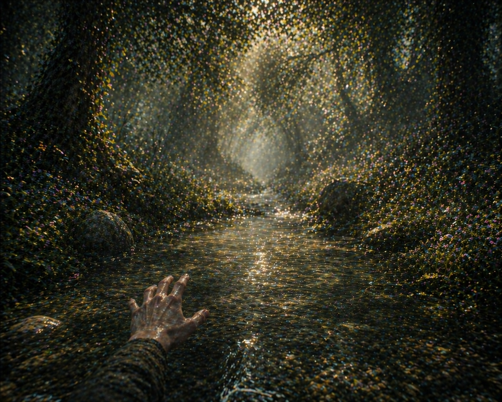

You were unable to keep up with the strong water flow and found yourself separated from your friends. The current pushed you towards a big rock in the middle of the spring, and now you are stranded on the rock...waiting for someone to find you.
Unfortunately, Anila's magic wasn't the most helpful solution. The spring's water pressure was too strong for the wind to overcome. The boat couldn't withstand the pressure anymore, which led you and your friends to be stranded by jumping off the boat...hanging onto a branch.
The flower jewel was more appealing, right? Sadly, in return, it has condemned you and your friends to being lost inside the grove. The sparkling aura was a curse that was put on the jewel. When you look at the back of it, you notice the curse inscription "If you chose this, your greed for pretty things has repaid you with a beautiful jewel and no way out of this Grove"